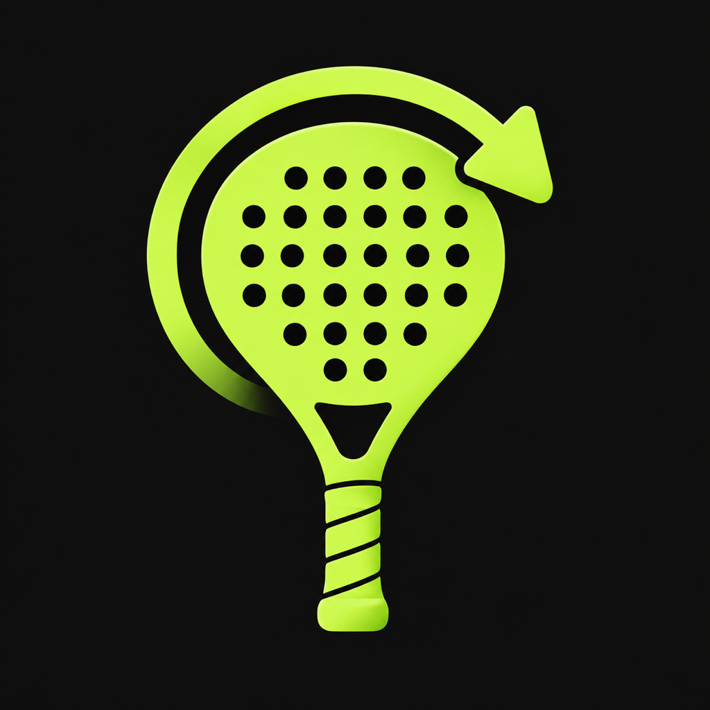

Punto Equipo A
Señalá a la izquierda con el índice o la paleta.

PLAYBACKREPETICIONES Y MARCADOR EN VIVO
PlayBack Padel transforma un iPhone en una cámara de repeticiones y marcador para tu partido.
Recibir novedadesJUAN · DIEGO
ANA · LUZ
Sin reloj, accesorios ni suscripciones. Solo el partido, tus mejores jugadas y un marcador que todos pueden ver.
CONTROLA EL PARTIDO
Señalá a la izquierda con el índice o la paleta.
Apuntá hacia abajo para corregir el último punto.
Señalá a la derecha y el marcador se actualiza.
Mostrá la palma abierta durante un segundo.
Dos palmas separadas abren la repetición con zoom.
HECHO PARA LA CANCHA
Guardá los últimos 15, 30 o 60 segundos sin detener la cámara.
Nombres, juegos y puntos en una pantalla grande y personalizable.
Revisá una jugada a pantalla completa y ampliá el detalle con un pellizco.
Elegí el color de cada equipo para reconocerlo rápido en cada pantalla.
PRÓXIMAMENTE
La descarga estará disponible pronto. Dejá tu email y te avisamos cuando llegue.